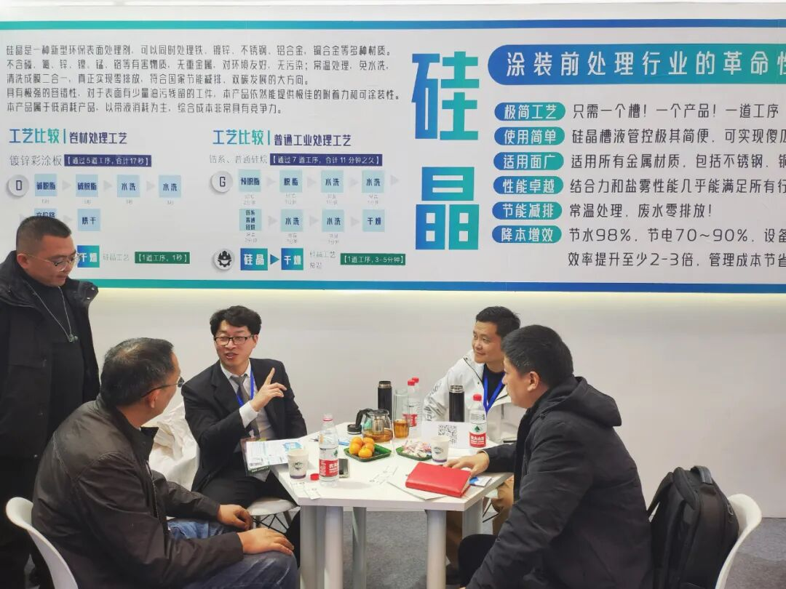

封面候选 · 渠道裁切与使用范围待客户确认
制造业 · 涂装前处理6、附着力0级、盐雾1000小时、零排放——硅晶工艺拿什么过品控和环评这两关？
和拓化学 · 企业技术内容 / 排版稿 v2 / 1940 字符
品控和合规负责人最怕什么？辛辛苦苦换了新工艺，结果产品性能不达标、环保检查出问题，或者出口时被一纸报告卡住。
硅晶LUMINCOAT面世以来，我们被问到最多的就是“性能数据够不够硬”“环保手续通不通得过”。

原稿配图 · 正文块 6；图示内容请客户复核今天把检测报告和验收依据摊开讲清楚。
一、性能关：盐雾、附着力、裸膜防锈，数据都摆在这里
品控部门最关心的就是三个字：能不能过。硅晶不是靠“感觉”，每一项都有实测数据。
附着力：0级是底线。 硅晶通过Si-O-Me和Si-N-Me共价键与基材结合，再与面漆交联形成稳固化学键。按划格法检测，附着力稳定达到0级——这是GB/T 9286的最高等级，漆膜边缘光滑、无一格脱落。
耐盐雾：不同基材、不同时长，都有对应数据。
冷轧板+硅晶+粉末：500小时中性盐雾
镀锌板+硅晶+粉末：500小时中性盐雾
铝板+硅晶+喷涂：1500小时中性盐雾
华为第三方测试（冷轧板/镀锌板+硅晶+粉末）：1000小时
中集第三方测试（冷轧板+硅晶+富锌底漆+粉末）：1000小时
 和拓宣传册 2025 · 原图 5（宣传资料，指标须另附检测或测算依据）
和拓宣传册 2025 · 原图 5（宣传资料，指标须另附检测或测算依据）这意味着什么？即使你的产品需要出口海运或者用于户外装备，1000小时盐雾无锈蚀的成绩也足以应付绝大多数验收标准。
耐水煮：冷轧板配套硅晶，30小时以上水煮不起泡、不脱落。这对需要湿热环境验证的产品尤其关键。
裸膜防锈：冷轧板处理后放置7~15天不返锈。很多产线换粉停线或雨季停工，工件还没来得及喷涂就生锈了——硅晶这个特性直接帮你省掉返工成本。
二、环保关：无磷无铬、废水零排放，环评轻松过
合规负责人的头等大事是不出事。废水超标、重金属违规，任何一条都够停产整顿。
成分端：六价铬是1类致癌物，硅晶不含。 2017年WHO已明确六价铬为1类致癌物，国家持续推动替代。硅晶不含磷、铬、锌、锰等重金属，无磷无氟无渣，出口产品RoHS合规无压力——无重金属意味着有害物质限值项天然通过。
排放端：真正意义上的零排放。 传统工艺7个水槽、多道漂洗，废水排放大户。硅晶工艺全程无水洗，没有漂洗水，从源头切断废水产生。唯一的槽液经油水分离+精密过滤后100%回用，最终只产生极少量固废。
现在很多新项目环评审批明确要求涂装前处理废水零排放——硅晶从工艺设计上就满足了这一条，而不是末端治理凑合过关。
三、质检常见的“翻车”问题，硅晶这样解决
换了新工艺最怕试产阶段出幺蛾子。我们整理了两种典型场景：
问题1：折弯/滚边/铆合后漆面开裂，良率上不去。 某汽车零部件厂，车用空气干燥罐喷涂后要滚边铆合并折弯180°，原陶化工艺不良率超20%。换硅晶后，因硅晶膜与基材、油漆均为化学键结合，随形性极好，不良率直降到1%以下，同时实现废水零排放。
——整改方案：不用改设备，只需换硅晶药剂并调整槽位顺序。
问题2：夏季/阴雨天或停线换粉，工件返锈严重。 南方钣金喷涂厂每逢梅雨季节就头疼，陶化后裸膜防锈差，返工率高。硅晶处理后裸膜7~15天不返锈，生产过程从容很多。改用硅晶后“质量非常稳定，电费每月省1.5万，水费基本忽略”。
 和拓宣传册 2025 · 原图 10（宣传资料，指标须另附检测或测算依据）
和拓宣传册 2025 · 原图 10（宣传资料，指标须另附检测或测算依据）——整改方案：直接替换原有脱脂+陶化工艺为硅晶A+硅晶B组合，成本可控、效果立竿见影。
四、通用验收规范，到底按什么标准来？
行业没有统一的“硅晶涂层国家标准”，但验收逻辑与所有涂装前处理一致，通常围绕三点：
附着力：划格法（GB/T 9286）或划圈法，0~1级为合格；
耐盐雾：按GB/T 10125中性盐雾试验，根据客户要求时长（一般240h、500h、720h、1000h不等），硅晶数据覆盖上述所有档位；
环保合规：废水按当地环保局批复的环评报告执行；硅晶工艺因无漂洗水、无重金属，企业只需按《排污许可证申请与核发技术规范》申报涂装工序，检测报告显示不含六价铬及磷酸盐即可。
验收中最怕的“解释不清”——硅晶所有数据均有第三方报告支撑（华为、中集等），不存在模糊地带。
最后给品控和合规负责人一句交底的话
硅晶不是实验室里的花架子。从汽车零部件、钣金柜体、彩涂板到铝型材，全国已有大量工厂实际量产运行。
你想调性能数据？我们有第三方1000小时盐雾报告。
你要过环评？零排放方案可以直接写入环评文件。
你担心出口RoHS？无重金属成分天然合规。
如果还在为“万一验收不过”而犹豫，可以这样想——硅晶的各项指标都面向比传统工艺更严苛的标准设计。用更贵的传统钝化未必达标的事，用硅晶反而能过。
具体到你工厂的材质要求、喷涂配套和当地环保政策，欢迎联系和拓技术团队。我们可以提供免费的技术评估和样品测试，帮你把验收风险降到最低。